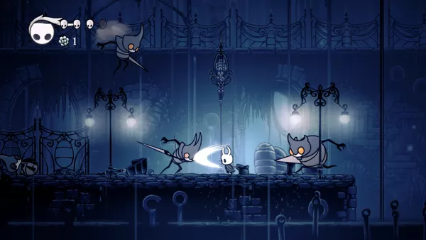
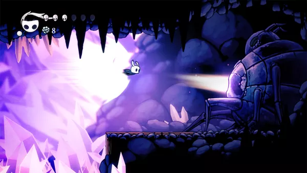

Description
Hollow Knight is a classically styled 2D action adventure across a vast interconnected world. Explore twisting caverns, ancient cities and deadly wastes; battle tainted creatures and befriend bizarre bugs; and solve ancient mysteries at the kingdom's heart.
Game Catergories
- Genre: Action
- Perspective: Side View
- Visual: 2D Scrolling
- Gameplay: Metroidvania, Platform
Quote
"It’s not hard to get lost in the deep, subterranean world of Hollow Knight – and I mean that in more ways than one. The expansive catacombs of Hallownest have countless paths to explore and secrets to find. But more than that, it’s rich with lore, history, and purpose that drew me into a 2D Metroidvania kingdom I wanted to uncover every inch of."
-- https://www.ign.com/articles/2018/06/22/hollow-knight-review